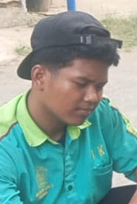

SENIOR NINO HAFIL | TJKT
Halo! Ini adalah halaman profil singkat kegiatan Praktik Kerja Lapangan (PKL) saya. Di bawah ini ada tautan ringkas (short link) menuju Kegiatan Harian PKL, Laporan PKL versi lengkap, dan Makalah. Seluruh tautan dibuat human-friendly agar mudah diingat dan diakses dari perangkat apa pun.
kegiatan
Jurnal harian, tugas, dokumentasi lapangan
/kegiatan
laporan
Laporan PKL lengkap, siap cetak
/laporan
makalah
File PDF (ringkas 5–10 halaman)
/makalah.pdf
galeri
Foto kegiatan, before/after, perangkat
/galeri
Tip: struktur direktori GitHub Pages yang direkomendasikan:
PKL_Asemdoyong/
├── index.html ← halaman profil (file ini)
├── kegiatan/ ← halaman-jurnal (HTML/MD/img)
│ └── index.html
├── laporan/ ← laporan lengkap (HTML per halaman)
│ └── index.html
├── galeri/ ← foto-foto kegiatan
│ └── index.html
└── makalah.pdf ← makalah versi PDF